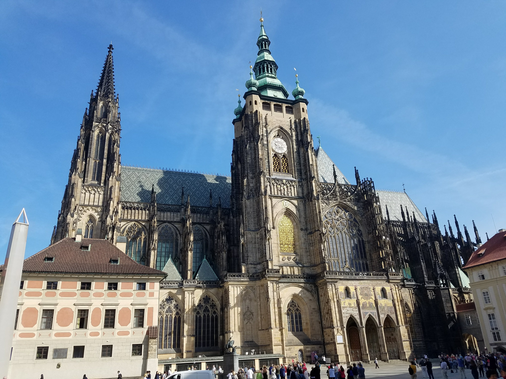

My European Odyssey
WELCOME
My name is Nikki.
Beyond you will find a collection of pictures from a few of my
travels
Austria
 Melk Abbey
Melk Abbey
 Karlskirche
Karlskirche
 Graben, Vienna
Graben, Vienna
 St. Stephen Cathedral
St. Stephen Cathedral
Spanish Riding School, Vienna Austria
{kind=link}
{kind=link}
Czech Republic
 Charles Bridge
Charles Bridge
St. Vitus Cathedral, Prague
St. Vitus Cathedral, Prague
Romania
Mogosoaia Palace
Snagov Monastery, Bucharest
Snagov Monastery, Bucharest
Snagov Monastery, Bucharest
Serbia
 Temple of Saint Sava
Temple of Saint Sava
 Catacombs of St. Sava Temple
Catacombs of St. Sava Temple
 St. Sava Temple Catacombs
St. Sava Temple Catacombs
Germany
 Passau
Passau
 Passau
Passau
 Passau
Passau
Regensburg
 St. Peters Cathedral, Regensburg
St. Peters Cathedral, Regensburg
Hungary
The Horsemen of Puszta
Dohany Street Synagogue, Budapest
Dohany Synagogue, Budapest
Slovakia
 Bratslava
Bratslava
 Men Working statue
Men Working statue
 Holocaust Memorial
Holocaust Memorial
Traveling the world has been a dream of mine since I was young. I have been lucky enough to experience just under 30 different countries of this world. Every picture you see here was taken by my own hands. Now I am no photagrapher, but I believe I manage to capture a bit of the world in these pictures. ENJOY!
"Broad, wholesome, charitable views of men and things cannot be acquired by vegetating in one little corner of the earth all of one's lifetime." - Mark Twain
"Twenty years from now you will be more disappointed by the things you didn't do than by the ones you did do." - H. Jackson Browne Jr.
"When overseas you learn more about your own country, than you do the place you're visiting."" -Clint Borgen
"Take only memories, leave only footprints." - Chief Seattle
Travel doesn't have to be a luxury. You can travel close to home too. It may take a little planning and saving but,
you only live once right? Go forth and see the things!
For now feel free to travel with me through my memories of some wonderful places. Be sure to start your own list of dream destinations.